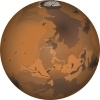

Mars
Mars is the Fourth planet from the Sun in Your Solar System. It is a dusty, cold, desert world with a very thin atmosphere. Mars is also a dynamic planet with seasons, polar ice caps, canyons and extinct volcanoes. Mars is one of the most explored bodies in our solar system, and it's the only planet where we've sent rovers to roam the alien landscape. Mars has two moons, Deimos and Phobos.